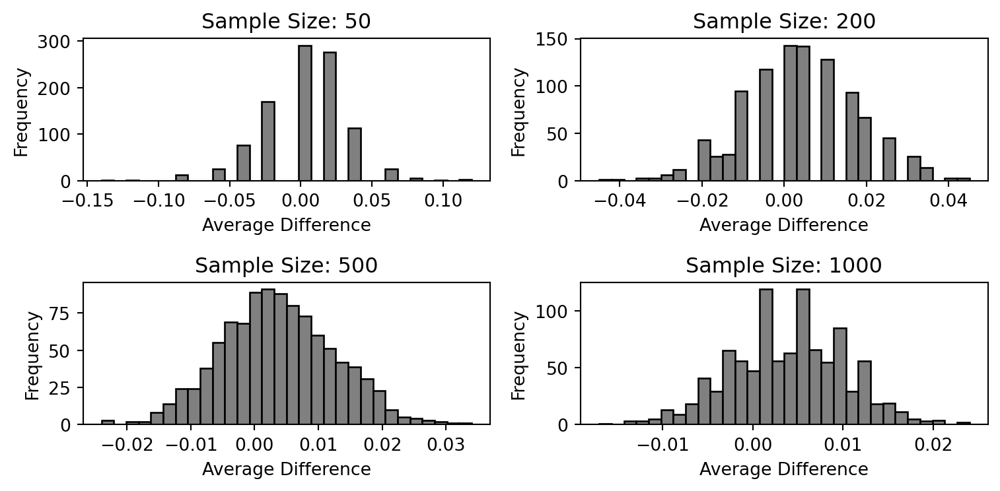

Dean Karlan at Yale and John List at the University of Chicago conducted a field experiment to test the effectiveness of different fundraising letters. They sent out 50,000 fundraising letters to potential donors, randomly assigning each letter to one of three treatments: a standard letter, a matching grant letter, or a challenge grant letter. They published the results of this experiment in the American Economic Review in 2007. The article and supporting data are available from the AEA website and from Innovations for Poverty Action as part of Harvard’s Dataverse.
The core hypothesis explored in the experiment is whether offering matching donations increases the likelihood and size of charitable contributions. Matching donations are often used by nonprofits under the belief that people are more likely to give when they know their donation will be “matched” by another funder.
To test this idea, Karlan and List conducted a large-scale natural field experiment involving 50,083 individuals who had previously donated to a politically conservative nonprofit organization. These individuals were randomly assigned to receive fundraising letters with different conditions: - Control group: received a standard donation request. - Treatment group: received one of three types of matching grants — a 1:1, 2:1, or 3:1 match. - Each letter also varied the match threshold (i.e., how much the funder was willing to match in total) and the suggested donation amount (either equal to or a multiplier of the donor’s previous contribution).
The strength of this design lies in its scale, natural setting (real donors, real money), and random assignment, which allows for clean causal inference.
This project seeks to replicate their results.
Data
Description
We analyze the dataset provided by the authors, which contains 50,083 observations — each representing a recipient of a fundraising letter. The dataset includes variables describing:
Experimental assignment: whether the individual received a control or treatment letter, and what kind of match ratio they received
Past donation behavior: frequency, amount, time since last donation, etc.
Demographics and political geography
The outcome variables: whether the individual donated and how much they gave
Below is the code used to load the dataset into Python and show a snapshot of its structure:
import pandas as pdimport statsmodels.api as smimport matplotlib.pyplot as pltfrom scipy import statsdf = pd.read_stata("karlan_list_2007.dta")# Display shape and variable namesdf.shape, df.columns.tolist()
Suggested donation was highest previous contribution
askd2
Suggested donation was 1.25 x highest previous contribution
askd3
Suggested donation was 1.50 x highest previous contribution
ask1
Highest previous contribution (for suggestion)
ask2
1.25 x highest previous contribution (for suggestion)
ask3
1.50 x highest previous contribution (for suggestion)
amount
Dollars given
gave
Gave anything
amountchange
Change in amount given
hpa
Highest previous contribution
ltmedmra
Small prior donor: last gift was less than median $35
freq
Number of prior donations
years
Number of years since initial donation
year5
At least 5 years since initial donation
mrm2
Number of months since last donation
dormant
Already donated in 2005
female
Female
couple
Couple
state50one
State tag: 1 for one observation of each of 50 states; 0 otherwise
nonlit
Nonlitigation
cases
Court cases from state in 2004-5 in which organization was involved
statecnt
Percent of sample from state
stateresponse
Proportion of sample from the state who gave
stateresponset
Proportion of treated sample from the state who gave
stateresponsec
Proportion of control sample from the state who gave
stateresponsetminc
stateresponset - stateresponsec
perbush
State vote share for Bush
close25
State vote share for Bush between 47.5% and 52.5%
red0
Red state
blue0
Blue state
redcty
Red county
bluecty
Blue county
pwhite
Proportion white within zip code
pblack
Proportion black within zip code
page18_39
Proportion age 18-39 within zip code
ave_hh_sz
Average household size within zip code
median_hhincome
Median household income within zip code
powner
Proportion house owner within zip code
psch_atlstba
Proportion who finished college within zip code
pop_propurban
Proportion of population urban within zip code
Balance Test
As an ad hoc test of the randomization mechanism, I provide a series of tests that compare aspects of the treatment and control groups to assess whether they are statistically significantly different from one another.
We begin by checking whether the treatment and control groups are balanced in terms of observable characteristics. This is a common first step in analyzing randomized experiments: if randomization was implemented correctly, both groups should be similar on all baseline variables.
Here, we focus on one such variable: the number of months since a donor’s last contribution (mrm2).
The average for the control group is 12.99 months, while for the treatment group it is 13.01 months. A t-test comparing these means yields t = 0.12, p = 0.905, indicating no statistically significant difference.
We also estimate a linear regression of mrm2 on the treatment indicator. The coefficient is effectively zero and not statistically significant, confirming the same conclusion.
These results suggest that the randomization was successful: the two groups appear well-balanced with respect to prior giving behavior. This gives us confidence that subsequent differences in donation outcomes can be attributed to the experimental treatments.
import pandas as pdimport statsmodels.api as smimport matplotlib.pyplot as pltfrom scipy import statsdf = pd.read_stata("karlan_list_2007.dta")# treatment + control + mrm2df_subset = df[["treatment", "control", "mrm2"]].dropna()# means = df_subset.groupby("treatment")["mrm2"].mean()# t-test t_stat, p_value = stats.ttest_ind( df_subset[df_subset["treatment"] ==1]["mrm2"], df_subset[df_subset["treatment"] ==0]["mrm2"], equal_var=False# Welch's t-test)X = sm.add_constant(df_subset["treatment"])model = sm.OLS(df_subset["mrm2"], X).fit()print("=== mean value ===")print(means)print("\n=== t-test ===")print(f"t = {t_stat:.3f}, p = {p_value:.3f}")print("\n=== OLS Regression result ===")print(model.summary())
Balance tests help confirm that the randomization worked as expected. If the treatment and control groups are similar on baseline characteristics, we can be more confident that later differences in donation outcomes are due to the treatment and not underlying differences between groups.
Experimental Results
Charitable Contribution Made
First, I analyze whether matched donations lead to an increased response rate of making a donation.
We begin by comparing donation rates between the treatment and control groups. In the graph below, we see the proportion of individuals who gave any donation, split by whether they received a matching offer or not.
The donation rate for the control group is approximately 1.8%, while for the treatment group it is 2.2%. This difference is statistically significant:
A t-test yields t = 3.21, p = 0.0013, indicating that the observed difference is unlikely to be due to random chance.
A linear probability model (OLS) confirms this result with a positive and significant coefficient on treatment:
ols_model.summary2().tables[1]
Coef.
Std.Err.
t
P>|t|
[0.025
0.975]
Intercept
0.017858
0.001101
16.224643
4.779032e-59
0.015701
0.020016
treatment
0.004180
0.001348
3.101361
1.927403e-03
0.001538
0.006822
To further validate the result, we estimate a probit model of donation on treatment status. The probit coefficient is 0.087 (p = 0.0019), again confirming a statistically significant effect of matching offers.
probit_model.summary2().tables[1]
Coef.
Std.Err.
z
P>|z|
[0.025
0.975]
Intercept
-2.100141
0.023316
-90.07277
0.000000
-2.145840
-2.054443
treatment
0.086785
0.027879
3.11293
0.001852
0.032143
0.141426
Interpretation
These results suggest that offering a matching donation significantly increases the likelihood that a person will donate. From a behavioral standpoint, this provides evidence that people are more motivated to give when they feel their contribution will be amplified.
Differences between Match Rates
Next, I assess the effectiveness of different sizes of matched donations on the response rate.
T-test Comparisons To examine whether the size of the match ratio affects donation behavior, I restrict the sample to the treatment group and compute the donation rate for each ratio subgroup:
1:1 match ratio → 2.07%
2:1 match ratio → 2.02%
3:1 match ratio → 2.27%
I then perform t-tests to compare the donation rates between different match sizes:
1:1 vs 2:1: p = 0.3345
2:1 vs 3:1: p = 0.9600
These p-values indicate that the differences in response rates across match ratios are not statistically significant. Therefore, larger match ratios do not appear to generate significantly higher giving rates, consistent with what Karlan & List describe on page 8: “the figures suggest no consistent pattern.”
Regression Analysis To validate this further, I estimate a linear regression model with dummy variables indicating the different match ratios:
The regression on gave using these dummies among the treatment group yields:
All coefficients are not statistically significant (p > 0.99)
Coefficients are extremely small, confirming the weak impact of match ratio levels on response behavior
Direct Comparison of Response Rates Finally, I directly compute the differences in average donation rates:
2:1 – 1:1 difference = 0.0019
3:1 – 2:1 difference = 0.0001
Again, the numerical differences are very small, further supporting the conclusion that increasing the match ratio from 1:1 to 3:1 does not lead to materially greater giving.
Conclusion
Taken together, these results replicate the original findings: while matched donations do increase overall giving compared to no match, increasing the generosity of the match offer (from 1:1 to 3:1) does not significantly boost response rates.
Size of Charitable Contribution
In this subsection, I analyze the effect of the size of matched donation on the size of the charitable contribution.
Full Sample We begin by regressing the donation amount on the treatment status across the full sample. The estimated coefficient on the treatment dummy is 0.154, but the p-value is approximately 0.063, which suggests the result is not statistically significant at the 5% level. This implies that when considering all individuals, offering a matching grant may increase donation amounts, but the evidence is not conclusive.
Conditional on Donating Next, we restrict the sample to only those who made a donation. This allows us to analyze how much respondents donate conditional on giving something. The treatment coefficient becomes -1.669, with a p-value of 0.561, indicating no statistically significant difference in the donation size between treatment and control groups among those who chose to give.
This suggests that while the offer of a match may increase the likelihood of donating (as shown earlier), it does not significantly impact the amount donated by those who do choose to donate.
Distributional Plots We also visualize the distribution of donation amounts for treatment and control groups using histograms:
As a reminder of how the t-statistic “works,” in this section I use simulation to demonstrate the Law of Large Numbers and the Central Limit Theorem.
Suppose the true distribution of respondents who do not get a charitable donation match is Bernoulli with probability p=0.018 that a donation is made.
Further suppose that the true distribution of respondents who do get a charitable donation match of any size is Bernoulli with probability p=0.022 that a donation is made.
Law of Large Numbers
This chart illustrates the Law of Large Numbers using a simulated experiment. I generated 10,000 simulated donation outcomes for the control group (Bernoulli p = 0.018) and 10,000 for the treatment group (Bernoulli p = 0.022), and then computed the cumulative average of their differences.
As shown, the cumulative average is quite noisy at the beginning due to the small sample size — early differences fluctuate dramatically. However, as the number of observations increases, the cumulative average stabilizes around 0.004 (the true treatment effect), demonstrating convergence.
This supports the intuition behind large sample inference: as the sample size grows, random variation diminishes, and estimates converge to their true values.
import numpy as npimport matplotlib.pyplot as pltp_control =0.018p_treatment =0.022n =10_000np.random.seed(42)control = np.random.binomial(n=1, p=p_control, size=n)treatment = np.random.binomial(n=1, p=p_treatment, size=n)diff = treatment - controlcumulative_avg = np.cumsum(diff) / np.arange(1, n +1)# Plot fig, ax = plt.subplots()ax.plot(cumulative_avg, label="Cumulative Average")ax.axhline(y=0.004, color="red", linestyle="--", label="True Treatment Effect (0.004)")ax.set_title("Law of Large Numbers: Cumulative Average of Differences")ax.set_xlabel("Sample Size")ax.set_ylabel("Cumulative Average")ax.legend()fig
Central Limit Theorem
import numpy as npimport matplotlib.pyplot as pltnp.random.seed(123)p_control =0.018p_treatment =0.022sample_sizes = [50, 200, 500, 1000]fig, axs = plt.subplots(2, 2, figsize=(8, 4))for i, n inenumerate(sample_sizes): differences = []for _ inrange(1000): control = np.random.binomial(1, p_control, n) treatment = np.random.binomial(1, p_treatment, n) diff = treatment.mean() - control.mean() differences.append(diff) ax = axs[i //2, i %2] ax.hist(differences, bins=30, color="grey", edgecolor="black") ax.set_title(f"Sample Size: {n}") ax.set_xlabel("Average Difference") ax.set_ylabel("Frequency")plt.tight_layout()fig

As shown above, these histograms display the distribution of average differences across 1000 simulations for various sample sizes. When the sample size is small (e.g., 50), the distribution is highly variable and not symmetric. As the sample size increases, the distributions become increasingly symmetric and bell-shaped, illustrating the Central Limit Theorem: the sampling distribution of the sample mean approaches a normal distribution as the sample size increases.